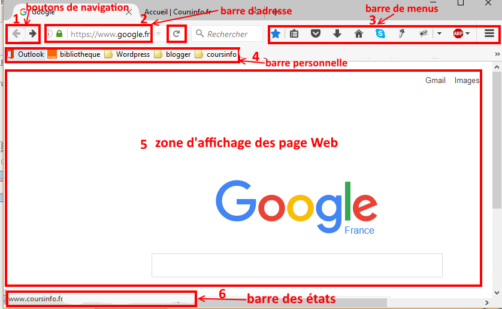

Un navigateur web est composé de divers modules qui permettent de communiquer suivant les réseaux, d'un moteur de rendu Web, d'une interface utilisateur adaptée au système d'exploitation et pour certains, d'un gestionnaire d'extensions, ou "plug-ins"".

Pour un navigateur moderne, l'interface comporte plusieurs éléments :